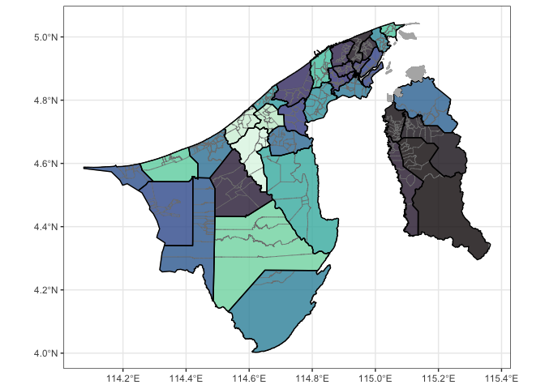

Provides Brunei GIS data in the form of a sf (simple features) object ready for plotting and analysis in R. The smallest (areal) unit of analysis is a “kampong” (although not all areas are actual kampongs), which in turn is contained within mukims and districts.
Installation
Install the released version of bruneimap from CRAN with:
install.packages("bruneimap")Or, if preferred, you may install the development version of bruneimap from GitHub using:
# install.packages("pak")
pak::pkg_install("propertypricebn/bruneimap")Features
There are three sf files contained in the package:
-
dis_sf(District level boundaries) -
mkm_sf(Mukim level boundaries) -
kpg_sf(“Kampong” level boundaries)
Most likely you will want to use either the kampong level or mukim level data.
Data
# Load libraries
library(tidyverse)
theme_set(theme_bw())
library(bruneimap)
library(sf)
# What's in our data set?
glimpse(kpg_sf)
#> Rows: 438
#> Columns: 9
#> $ id <dbl> 1, 2, 3, 4, 5, 6, 7, 8, 9, 10, 11, 12, 13, 14, 15, 16, 17, 1…
#> $ kampong <chr> "Kg. Biang", "Kg. Amo", "Kg. Sibut", "Kg. Sumbiling Baru", "…
#> $ mukim <chr> "Mukim Amo", "Mukim Amo", "Mukim Amo", "Mukim Amo", "Mukim A…
#> $ district <chr> "Temburong", "Temburong", "Temburong", "Temburong", "Temburo…
#> $ geometry <POLYGON [°]> POLYGON ((115.1546 4.66665,..., POLYGON ((115.1626 4…
#> $ X <dbl> 115.1244, 115.1512, 115.1080, 115.1071, 115.1600, 115.1247, …
#> $ Y <dbl> 4.666180, 4.631506, 4.611763, 4.597677, 4.574173, 4.587969, …
#> $ perimeter [m] 21056.211 [m], 38683.611 [m], 16291.051 [m], 12994.328 [m], 33…
#> $ area [m^2] 19281117.5 [m^2], 52037879.4 [m^2], 7597654.2 [m^2], 6652565…Plots
ggplot(kpg_sf) +
geom_sf(aes(fill = mukim), col = "gray50", alpha = 0.8) +
geom_sf(data = mkm_sf, col = "black", lwd = 0.5, fill = NA) +
geom_sf(data = dplyr::filter(kpg_sf, is.na(mukim)), fill = "gray70", col = "gray70") +
theme(legend.position = "none") +
scale_fill_viridis_d(option = "mako")
Acknowledgements
The Brunei map was generated from publicly available Survey Department data. The GeoJSON files were sourced from thewheat/brunei_map GitHub repo. It comes with a neat web app. Many thanks to these guys!
Contributors
All contributions to this project are gratefully acknowledged using the allcontributors package following the all-contributors specification. Contributions of any kind are welcome!
 nrirdnbtrsy |
 haziqj |
 alvinbjl |
 Angela-29 |
 SyafYus |
 Dwaaz |
 HafeezulRaziq |
 ANajwa-20 |
 nswaaan |
 MrJaZzi |
 Syfii |